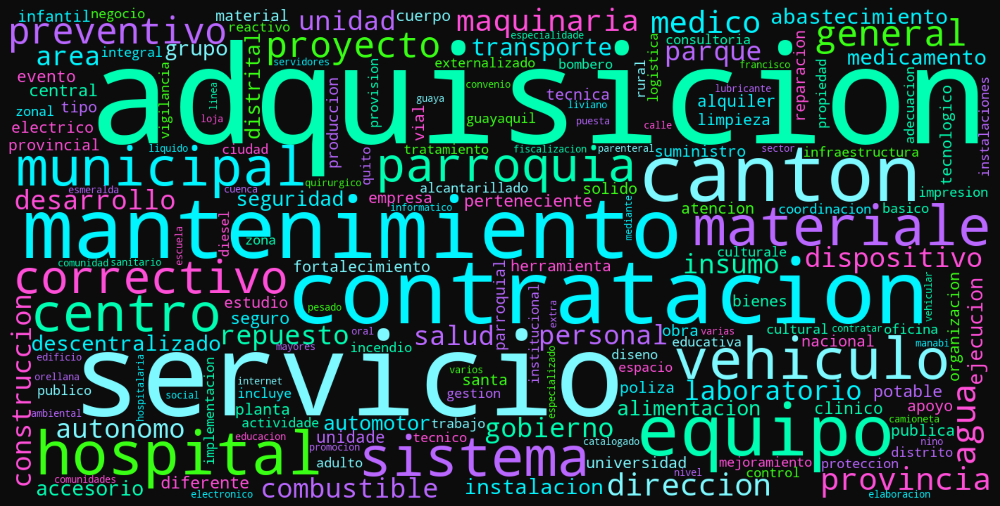

Preparación de Datos
Preparación y Limpieza de Datos
Este documento resume cómo se preparó el dataset final antes del análisis visual. El objetivo es dejar explícitas las decisiones técnicas sobre carga, validación, tratamiento de nulos, transformaciones analíticas y filtros aplicados sobre resultados_matcher3_v3.csv.
ETAPA 01
Carga del Dataset
Se trabaja con el archivo consolidado resultados_matcher3_v3.csv, que contiene la salida del proceso de vinculación entre procesos formales de SERCOP y necesidades de contratación NCO.
Dataset cargado: resultados_matcher3_v3.csv
Filas: 38,997
Columnas: 20
ETAPA 02
Exploración Inicial
Estructura general del dataset: nombres de columnas, tipos y una muestra de registros.
Columnas:
- Codigo_Proceso
- Entidad_Procesos_Todos
- Monto_Proceso
- Fecha_Publicacion_Proceso
- Fecha_Adjudicacion_Proceso
- Objeto_Procesos_Todos
- Estado_Procesos_Todos
- Codigo_NCO
- Entidad_Necesidades
- Fecha_Publicacion_NCO
- Fecha_Entrega_Proforma_NCO
- Descripcion_Necesidad
- Estado_Necesidad
- Estado_Coincidencia
- Porcentaje_Similaridad
- Index_En_NCO
- Ciudad
- Provincia
- URL_Procesos_Todos
- URL_Necesidades_Contratacion
\nTipos de datos:
Codigo_Proceso object
Entidad_Procesos_Todos object
Monto_Proceso float64
Fecha_Publicacion_Proceso object
Fecha_Adjudicacion_Proceso object
Objeto_Procesos_Todos object
Estado_Procesos_Todos object
Codigo_NCO object
Entidad_Necesidades object
Fecha_Publicacion_NCO object
Fecha_Entrega_Proforma_NCO object
Descripcion_Necesidad object
Estado_Necesidad object
Estado_Coincidencia object
Porcentaje_Similaridad float64
Index_En_NCO int64
Ciudad object
Provincia object
URL_Procesos_Todos object
URL_Necesidades_Contratacion object
dtype: object
\nDimensiones: (38997, 20)| Codigo_Proceso | Entidad_Procesos_Todos | Monto_Proceso | Fecha_Publicacion_Proceso | Fecha_Adjudicacion_Proceso | Objeto_Procesos_Todos | Estado_Procesos_Todos | Codigo_NCO | Entidad_Necesidades | Fecha_Publicacion_NCO | Fecha_Entrega_Proforma_NCO | Descripcion_Necesidad | Estado_Necesidad | Estado_Coincidencia | Porcentaje_Similaridad | Index_En_NCO | Ciudad | Provincia | URL_Procesos_Todos | URL_Necesidades_Contratacion | |
|---|---|---|---|---|---|---|---|---|---|---|---|---|---|---|---|---|---|---|---|---|
| 0 | COTO-GADMCY-2025-002 | GOBIERNO AUTONOMO DESCENTRALIZADO MUNICIPAL DE... | 333548.98 | 2025-06-30 20:00:00 | 2025-07-22 17:00:00 | CONSTRUCCION Y AMPLIACION DEL SISTEMA DE ALCAN... | Ejecución de Contrato | NIC-1960000540001-2025-00023 | GOBIERNO AUTONOMO DESCENTRALIZADO MUNICIPAL DE... | 2025-05-21 12:30:00 | 2025-05-26 08:00:00 | ADQUISICIÓN DE HERRAMIENTAS Y EQUIPOS MENORES ... | Finalizada | Match Confiable | 88.30 | 224323 | YACUAMBI | ZAMORA CHINCHIPE | https://www.compraspublicas.gob.ec/ProcesoCont... | https://www.compraspublicas.gob.ec/ProcesoCont... |
| 1 | COTS-CNELEP-2025-047 | EMPRESA ELÉCTRICA PÚBLICA ESTRATÉGICA CORPORAC... | 252646.39 | 2025-06-30 20:00:00 | 2025-07-31 12:00:00 | BOL SERVICIO DE MANTENIMIENTO DE VEHICULOS INC... | Ejecución de Contrato | NC-0968599020001-2025-00167 | EMPRESA ELÉCTRICA PÚBLICA ESTRATÉGICA CORPORAC... | 2025-05-13 09:00:00 | 2025-05-15 08:42:00 | BOL SERVICIO DE MANTENIMIENTO DE VEHICULOS INC... | Finalizada | Match Confiable | 100.00 | 96992 | GUAYAQUIL | GUAYAS | https://www.compraspublicas.gob.ec/ProcesoCont... | https://www.compraspublicas.gob.ec/ProcesoCont... |
| 2 | COTS-CNT-2025-6649 | CORPORACION NACIONAL DE TELECOMUNICACIONES | 397920.00 | 2025-06-30 20:00:00 | 2025-08-15 20:00:00 | MANTENIMIENTO CORRECTIVO PARA GRUPOS ELECTRÓGE... | Ejecución de Contrato | NC-1768152560001-2025-00027 | CORPORACION NACIONAL DE TELECOMUNICACIONES | 2025-01-29 16:30:00 | 2025-02-03 20:30:00 | MANTENIMIENTO CORRECTIVO PARA GRUPOS ELECTRÓGE... | Finalizada | Match Confiable | 100.00 | 118788 | DISTRITO METROPOLITANO DE QUITO | PICHINCHA | https://www.compraspublicas.gob.ec/ProcesoCont... | https://www.compraspublicas.gob.ec/ProcesoCont... |
| 3 | FI-MDMQ-2025-7044 | GOBIERNO AUTONOMO DESCENTRALIZADO DEL DISTRITO... | 7794.55 | 2025-06-30 20:00:00 | NaN | ADQUISICION DE MATERIALES DIDACTICOS PARA LA E... | Finalizada | NC-1760003410001-2025-00248 | GOBIERNO AUTONOMO DESCENTRALIZADO DEL DISTRITO... | 2025-03-18 17:00:00 | 2025-03-20 17:00:00 | ADQUISICIÓN DE MATERIAL DIDÁCTICO PARA LA EJEC... | Finalizada | Match Confiable | 96.11 | 103832 | DISTRITO METROPOLITANO DE QUITO | PICHINCHA | https://www.compraspublicas.gob.ec/ProcesoCont... | https://www.compraspublicas.gob.ec/ProcesoCont... |
| 4 | MCO-GADMCGP-2025-004 | GOBIERNO AUTÓNOMO DESCENTRALIZADO MUNICIPAL DE... | 22809.17 | 2025-06-30 20:00:00 | 2025-07-23 10:00:00 | CONSTRUCCIÓN DE BATERÍA SANITARIA EN LA ESCUEL... | Ejecución de Contrato | NC-1560001240001-2024-00037 | GOBIERNO AUTÓNOMO DESCENTRALIZADO MUNICIPAL DE... | 2024-11-05 07:30:00 | 2024-11-07 10:00:00 | ADQUISICIÓN DE EQUIPOS DE PROTECCIÓN PERSONAL ... | Finalizada | Match Confiable | 86.65 | 41463 | GONZALO PIZARRO | SUCUMBIOS | https://www.compraspublicas.gob.ec/ProcesoCont... | https://www.compraspublicas.gob.ec/ProcesoCont... |
Procesos únicos: 38997
NCO no nulos: 38418
\nEstados de coincidencia:
Estado_Coincidencia
Match Confiable 36723
Match Potencial 1695
Sin coincidencia real en NCO 579
Name: count, dtype: int64
ETAPA 03
Manejo de Valores Faltantes
Los faltantes se revisan en las variables críticas de emparejamiento, fechas y montos. No se imputan valores en campos sin importanciadebido a que esto marca la ausencia de match que puede ser proc¿vocado por falta de datos después del scraping.
Fecha_Adjudicacion_Proceso 3125
Fecha_Entrega_Proforma_NCO 580
Codigo_NCO 579
Entidad_Necesidades 579
Fecha_Publicacion_NCO 579
Descripcion_Necesidad 579
URL_Necesidades_Contratacion 579
Estado_Necesidad 579
Monto_Proceso 4
dtype: int64Codigo_NCO 579
Fecha_Publicacion_Proceso 0
Fecha_Adjudicacion_Proceso 3125
Fecha_Publicacion_NCO 579
Fecha_Entrega_Proforma_NCO 580
Monto_Proceso 4
Porcentaje_Similaridad 0
dtype: int64Un Código_NCO nulo se interpreta como ausencia de match válido. Las fechas y los montos faltantes se mantienen sin imputación para no introducir información artificial en el análisis.
ETAPA 04
Transformaciones y Variables Analíticas
Se crean variables auxiliares para facilitar el análisis descriptivo y visual. Las columnas originales se preservan y las transformaciones se hacen en una copia de trabajo.
Monto_Proceso Porcentaje_Similaridad tiene_match match_confiable \
0 333548.98 88.30 True True
1 252646.39 100.00 True True
2 397920.00 100.00 True True
3 7794.55 96.11 True True
4 22809.17 86.65 True True
cambio_textual tipo_contratacion anio_proceso mes_proceso \
0 11.70 COTO 2025 6
1 0.00 COTS 2025 6
2 0.00 COTS 2025 6
3 3.89 FI 2025 6
4 13.35 MCO 2025 6
dias_entre_nco_y_proceso
0 40.0
1 48.0
2 152.0
3 104.0
4 237.0 Duplicados Codigo_Proceso: 0
Duplicados Codigo_NCO en matches: 0La variable cambio_textual se define como 100 - Porcentaje_Similaridad porque es más interpretable para rankings y mapas de calor. También se extrae tipo_contratación para comparar modalidades de compra.
ETAPA 05
Filtrado y Selección de Datos
Se distinguen dos universos analíticos: cobertura total del sistema y subconjunto útil para analizar el cambio textual entre la necesidad y el proceso.
Total procesos 2025: 38,997
Procesos con match: 38,418
Procesos para análisis visual (similitud >= 75): 38,418
Estado_Coincidencia en dataset visual:
Estado_Coincidencia
Match Confiable 36723
Match Potencial 1695
Name: count, dtype: int64Nota: Para medir cobertura institucional se conserva el dataset completo de procesos 2025. Para medir el cambio textual solo se usan casos con match real y similitud suficiente para evitar comparaciones espurias.
ETAPA 06
Exploración de Texto
Como exploración complementaria, se pueden revisar los términos más frecuentes en las descripciones de necesidad. Esto ayuda a identificar el vocabulario dominante del corpus antes de construir visualizaciones más explicativas.
palabra frecuencia
0 adquisicion 18293
1 servicio 11255
2 contratacion 6737
3 mantenimiento 5918
4 canton 5202
5 equipos 3147
6 hospital 2911
7 materiales 2482
8 municipal 2468
9 2025 2453
10 vehiculos 2244
11 correctivo 2141
12 parroquia 2109
13 preventivo 2049
14 general 2034
ETAPA 07
Justificación General
La preparación de datos busca separar dos problemas distintos: cobertura del matching y magnitud del cambio textual. Por eso no se eliminan todos los no-match del dataset base, pero sí se filtran los casos más útiles para las visualizaciones explicativas.
Las decisiones de conversión de tipos, conservación de nulos, creación de variables y filtrado por similitud mínima permiten que el análisis visual se construya sobre datos trazables, interpretables y consistentes con la lógica del emparejamiento entre procesos y necesidades.